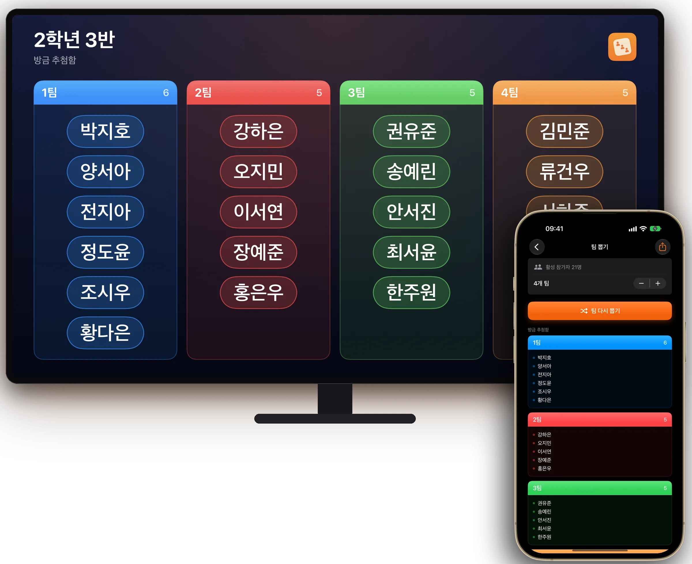
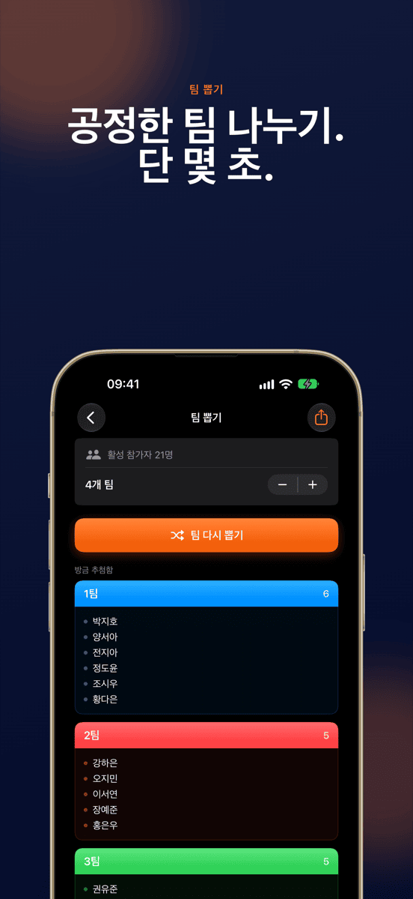
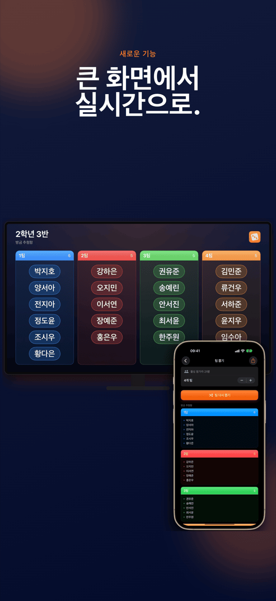
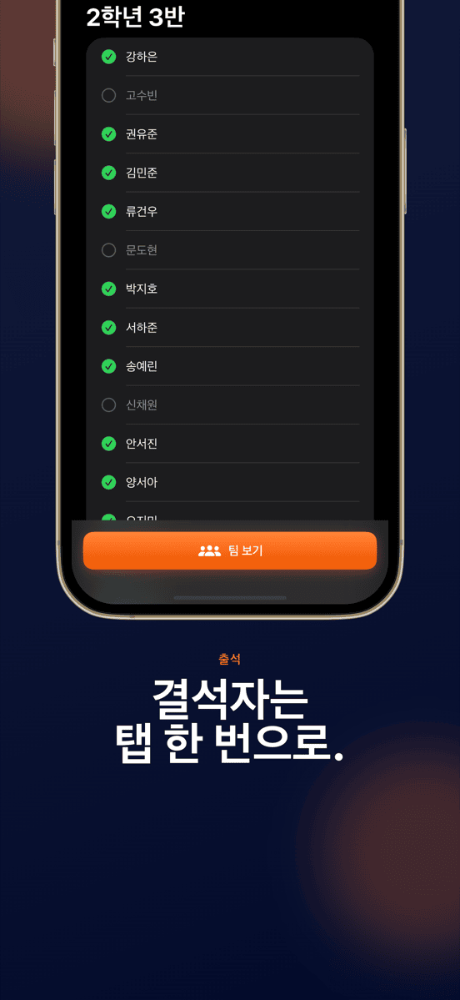
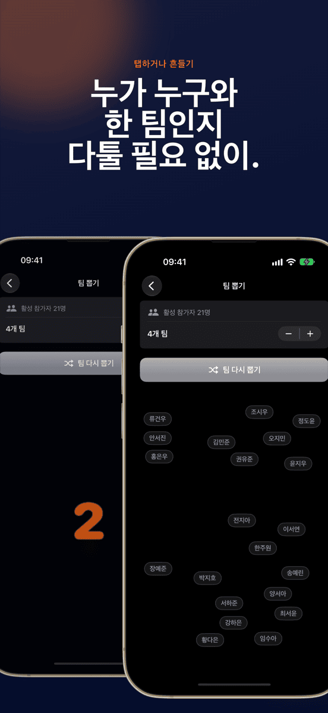
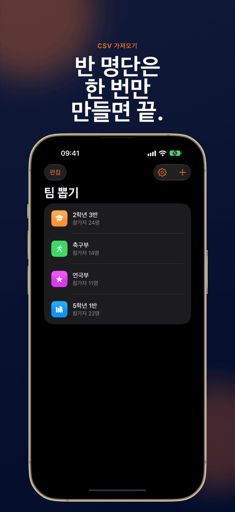
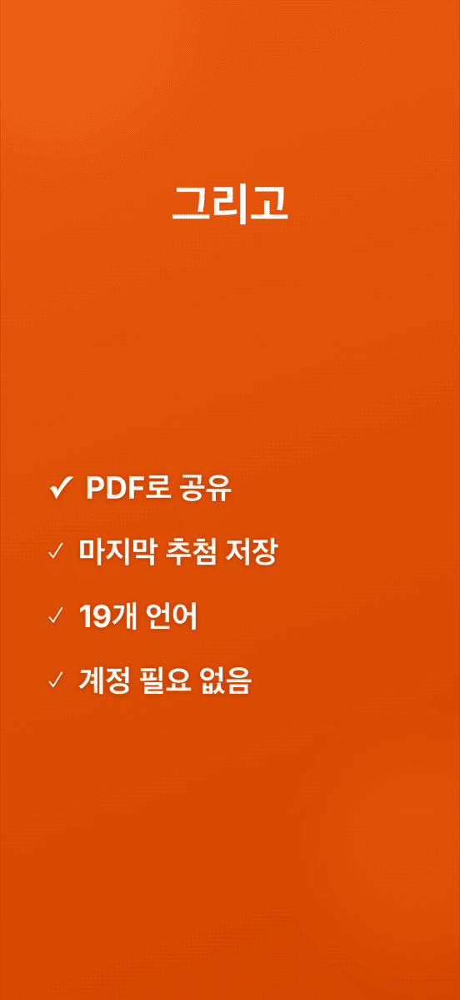

새로운 기능큰 화면에서 실시간으로
팀 뽑기
공정한 팀 나누기. 단 몇 초.







다툼 없는 팀 나누기.
큰 화면에서 실시간으로
AirPlay나 케이블로 연결하면 반 전체가 팀이 정해지는 모습을 함께 봅니다.
탭 한 번이면 끝
모두가 무작위로, 고르게 팀에 나뉩니다.
그룹은 저장됩니다
반, 팀, 동아리를 한 번만 만들어 두면 언제든 다시 뽑을 수 있습니다. 그룹마다 마지막 뽑기 결과도 남아 있습니다.
결석자는 제외
결석한 사람은 탭 한 번으로 체크를 해제하면 뽑기에서 빠집니다.
팀 수는 자유롭게
2명씩, 3명씩, 4명씩 또는 더 큰 팀으로.
모두가 보는 앞에서 섞기
애니메이션이 모든 이름을 눈앞에서 섞습니다. 기기를 흔들면 새 라운드가 시작됩니다.
이렇게 간단합니다.
그룹 만들기
이름을 입력하거나 CSV를 가져옵니다.
결석자 빼기
오늘 없는 사람마다 탭 한 번.
뽑기
팀 수를 고르고, 탭하고, 지켜보세요.
보여주기
프로젝터에 띄우거나 PDF로 공유.
가이드
자주 묻는 질문
그룹을 무작위로 팀으로 나누려면?
팀 뽑기에서 그룹을 한 번 만들고 참가자를 추가한 뒤 뽑기를 시작하세요. 앱이 선택한 팀 수에 맞춰 모두를 무작위로 고르게 나눕니다.
팀 뽑기는 누구를 위한 앱인가요?
팀을 자주 나누는 모든 분을 위한 앱입니다. 교사, 코치, 워크숍 진행자, 동아리, 행사 주최자 등.
팀 수를 직접 정할 수 있나요?
네. 2명씩부터 큰 팀까지 팀 수를 직접 고르면 팀 뽑기가 참가자를 고르게 나눕니다.
제 데이터가 저장되거나 전송되나요?
모든 그룹과 이름은 기기에만 저장됩니다. 어떤 데이터도 서버로 보내지 않습니다.
Excel에서 명단을 가져올 수 있나요?
네. Excel이나 Google 스프레드시트에서 CSV로 내보낸 뒤 팀 뽑기로 가져오세요. 반 전체가 몇 초 만에 등록됩니다.
뽑기를 프로젝터에 띄울 수 있나요?
네. iPhone이나 iPad를 AirPlay 또는 케이블로 프로젝터, Apple TV, 모니터에 연결하면 팀 뽑기가 그 화면에 뽑기를 가로 방향으로 실시간 표시합니다. 조작은 그대로 손에 든 기기에서 합니다.
팀 뽑기는 얼마인가요?
다운로드와 첫 뽑기는 무료입니다. 그다음 뽑기부터는 월간 또는 연간 Pro 구독이 필요하며, 먼저 무료로 체험할 수 있습니다. 팀 뽑기는 iOS 17 이상의 iPhone과 iPad에서 사용할 수 있습니다.